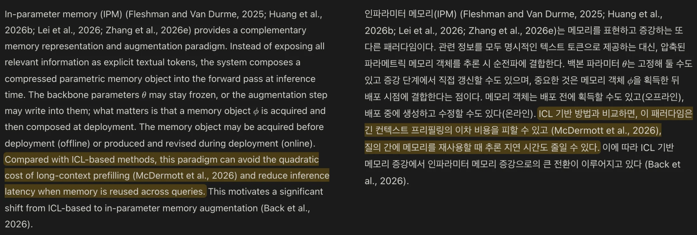
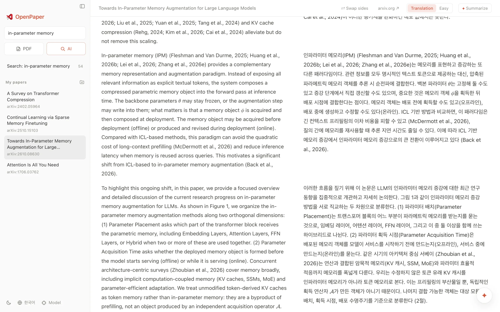
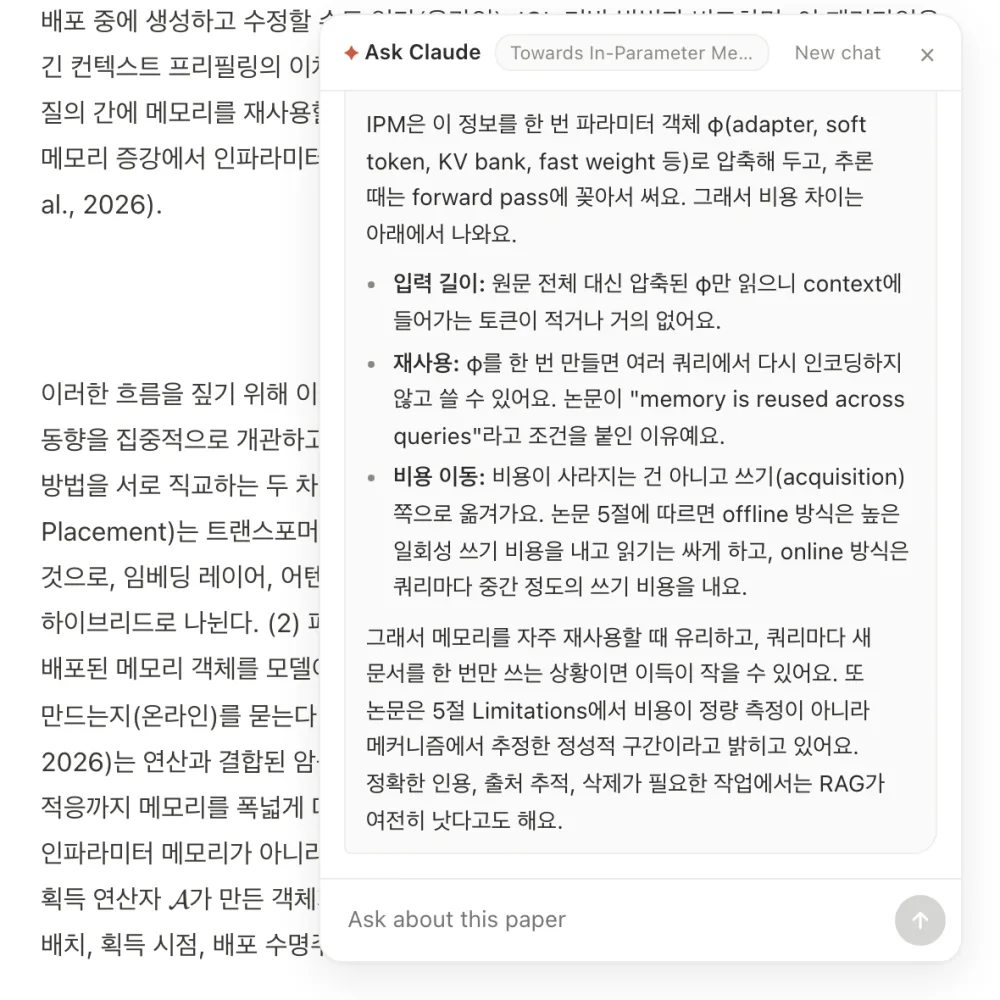
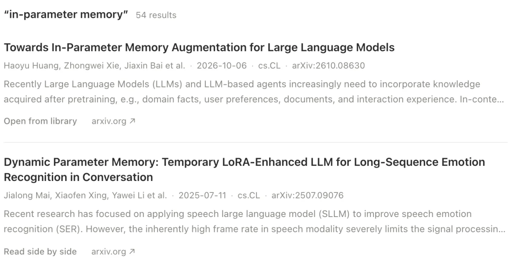

Linked sentences
Point at a sentence and its pair lights up in the other column. Equations, figures and tables stay where the paper put them.

Open source · macOS and Windows
Search arXiv, read a paper side by side with its translation, and ask questions about it.
It runs on the Claude Code or Codex you are already logged in to, or on your own API key. Your papers stay on your computer.
Free under the MIT license.

Point at a sentence and its pair lights up in the other column. Equations, figures and tables stay where the paper put them.

Select a passage and ask about it, or get a summary of the whole paper. Answers come in your language.

Search arXiv by keywords, paste an arXiv ID or URL, or open a PDF. The AI finder only suggests papers that really exist on arXiv.

Translate into Korean, Japanese, Chinese, Spanish, French, German or Portuguese. Pick a faithful translation, or an easy version that explains hard terms in plain words.
Installs the app, installs Claude Code if it is missing, and starts the login. Run it again to update.
$ curl -fsSL https://raw.githubusercontent.com/sionic-ai/openpaper/main/install.sh | bashDownload and run the setup program. It installs for your user, with no admin rights. If you don't have Claude Code yet, run this in PowerShell and log in.
> irm https://claude.ai/install.ps1 | iex
> claude auth loginTauri 2, Rust and React. Needs Rust, Node and pnpm, and a logged-in Claude Code.
$ git clone https://github.com/sionic-ai/openpaper && cd openpaper && pnpm install && pnpm devOpenPaper is open source. Report a problem, suggest a feature, or send a pull request.